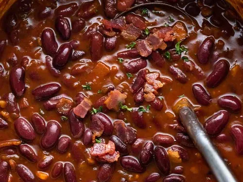

Beans

Beans with bacon
Beans, beans, and beans is a very hearty dish made up of baked beans,
kidney beans, and lima beans. If you like beans, you'll love this recipe.
Ingredients
- 12 ounces bacon
- 1 pound ground beef
- 4 (15 ounce) cans pork and beans
- 2 large onions, chopped
- 1 (18 ounce) bottle honey barbecue sauce
- 1 (15 ounce) can kidney beans, rinsed and drained
- 1 (15 ounce) can lima beans, rinsed and drained
- 1 (15 ounce) can black beans, rinsed and drained
- ½ cup packed brown sugar
- 3 tablespoons apple cider vinegar
- 1 tablespoon liquid smoke flavoring (Optional)
- 1 teaspoon salt
- ½ teaspoon ground black pepper
Steps
- Preheat the oven to 350 degrees F (175 degrees C).
- Cook bacon in a large, deep skillet over medium-high heat, turning occasionally, until evenly browned, about 10 minutes. Drain on a paper towel-lined plate. Cool, then crumble.
- Meanwhile, add ground beef and onions to a large skillet over medium heat; cook and stir until beef is no longer pink, breaking it apart as it cooks, about 10 minutes. Drain excess grease. Transfer beef and onions to a large Dutch oven. Stir in crumbled bacon, pork and beans, barbecue sauce, kidney beans, lima beans, black beans, brown sugar, cider vinegar, liquid smoke, salt, and black pepper.
- Bake, covered, in the preheated oven until bubbling, about 1 hour.
Note
This is a great recipe for a slow cooker. Mix all of the ingredients and cook on Low heat for 4 to 6 hours.